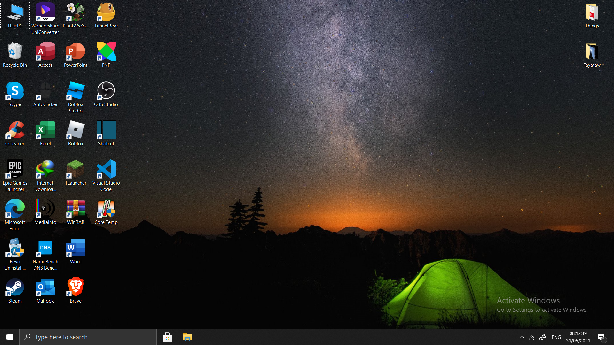

A Tour inside a computer
We are looking at what you will see inside a computer when you open, however, there are alot of operating systems to choose from, so we will be taking a look at the famous Windows 10 OS.
The Desktop

This is what you will be seeing when you first open your computer assuming you have Windows 10.
This icons at left and a few at the right are not what you will be seeing unless you installed them and choose them to.
The Storage

Here we have a view of the computer's storage.
To view this, search for "This PC" in the Start Menu or simply double click on the "This PC" at the desktop.
As you can see, there are two drives called "Windows (C:)" and "Data (D:)". Do not pay too much attention about their names
since you can rename them as you like. The storage gives you details of all the storage drives in your computer.
The details include:
- Full Capacity of each drives
- Used space of each drives
- Remaining space of each drives
- The Device Type
- The File Sytem of the drives
Windows (C:)

The Windows (C:) contains various numbers of folder which are actually created by system when you install Windows 10.
Of course, you can add new files and folders in it as you wish.
The folders usually created by the system are:
- $SysReset (Hidden File)
- $WinREAgent (Hidden File)
- MSOCache (Hidden File)
- PerfLogs
- Program Files
- Program Files (x86)
- Program Data (Hidden File)
- Temp
- Users
- Windows
The following files mentioned above are system files and should not be modified unless,
you know what you are doing, or else it might damage or compromise the operating system.
Unlike the "Data (D:)" drive, "Windows (C:)" drive is much more sensitive and dangerous to mess around.
Click here to view --} Data (D:)
Data (D:)

Data (D:) is pretty much empty without touching it. Its a drive for you to store as you desire such as
games, music, videos, images and infinity as long as the disk space is not full obviously.
I recommend you store files in "Data (D:)" rather than "Windows (C:)" to be safer.
Click here ro view --} Windows (C:)